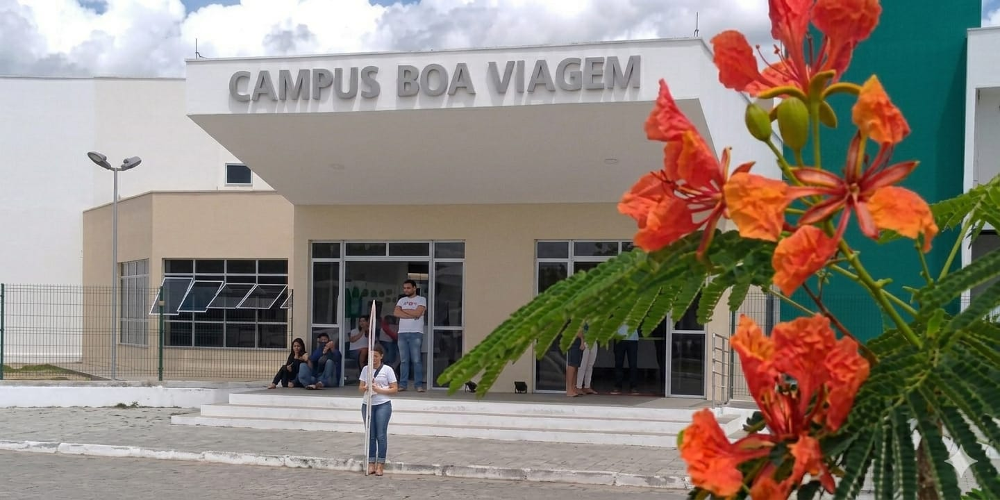

Instituto Federal de Educação, Ciência e Tecnologia do Ceará
Construa seu futuro no IFCE Campus Boa Viagem
Ensino público, gratuito e de excelência. Desenvolva seu potencial por meio de cursos técnicos e superiores, projetos de pesquisa, extensão e inovação.
Conheça Nossos Cursos Ver Projetos de ExtensãoFormas de Ingresso
Estude em uma instituição pública, gratuita e reconhecida pela excelência no ensino. Conheça as modalidades de ingresso oferecidas pelo IFCE e encontre a opção ideal para iniciar sua trajetória acadêmica.
Ensino Técnico
Cursos voltados para estudantes que desejam adquirir formação profissional de qualidade, desenvolvendo competências técnicas alinhadas às demandas do mercado de trabalho.
Ensino Superior
Graduações que combinam conhecimento científico, inovação e prática profissional, preparando os estudantes para atuar em diversas áreas e contribuir para o desenvolvimento da sociedade.
Cursos para a Comunidade
Programas de formação destinados à comunidade em geral, promovendo qualificação profissional, atualização de conhecimentos e oportunidades de crescimento pessoal e profissional.
Por que estudar no IFCE?
Ensino de Qualidade
O IFCE é referência em educação profissional, tecnológica e superior, oferecendo formação alinhada às necessidades da sociedade e do mercado de trabalho.
Pesquisa e Inovação
Os estudantes participam de projetos de pesquisa, desenvolvimento tecnológico e iniciativas inovadoras que contribuem para o crescimento regional.
Extensão e Comunidade
O instituto desenvolve ações que aproximam a comunidade acadêmica da sociedade, promovendo transformação social e compartilhamento de conhecimento.
Campus Boa Viagem
Localizado na BR-020, o Campus Boa Viagem dispõe de salas de aula, laboratórios, biblioteca, auditório e espaços de convivência voltados para a formação acadêmica e profissional dos estudantes.
Saiba mais sobre o CampusFique por Dentro
Acompanhe notícias, eventos, editais e oportunidades disponíveis para estudantes e comunidade.
Notícias